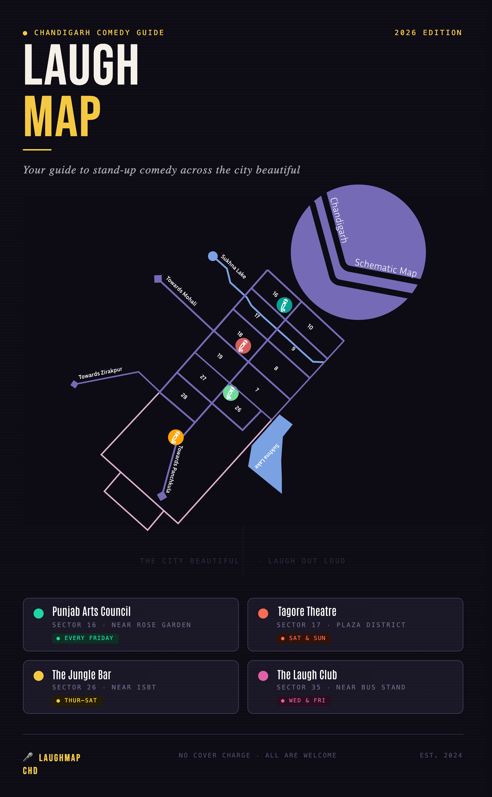

Research
The project began with mapping local interaction patterns and decision flows to understand how people navigate choices in everyday social contexts.

Outcome

A social game concept designed to spark conversation, humor, and shared decision-making.
The project began with mapping local interaction patterns and decision flows to understand how people navigate choices in everyday social contexts.
